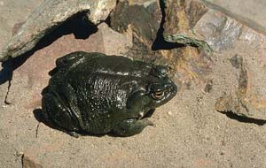

<body text="#000000" bgcolor="#FFFFFF" background="bg311.gif">

ЖАБА ДАКОТСКАЯ (Bufo hemiophrys) Почти вся популяция этих жаб на северо-западе штата Миннесота зимует в рассеянных по прерии земляных насыпях. Высота насыпей достигает 30—60 см, а ширина — 3—12 м. При рытье нор жабы перемещают за год 2407 м3 почвы. Возможно, их роющая деятельность была существенным фактором в происхождении этих насыпей. Массовый выход с зимовки у этого вида обычно происходит 12—18 мая. Половозрелые особи просыпаются раньше молоди, а самцы и самки одновременно. В период выхода с зимовки была поймана 7651 жаба. Все выловленные животные объединяются только в две возрастные группы — неполовозрелых и взрослых. Происходит это потому, что молодые достигают размеров взрослых уже при выходе со второй зимовки. Быстро растут они и в первый год своей жизни. После метаморфоза молодь имеет длину 31 мм. Число самцов и самок среди взрослых жаб одинаково. Соотношение молодых и взрослых меняется по годам. Так, в 1960 г. на одно взрослое животное приходилось четыре неполовозрелых, в 1961 г.— четырнадцать, а в 1962 г.— тринадцать. Зима 1960 г. была малоснежной, и почва промерзла глубже, чем обычно. Вероятно, неполовозрелые особи закапываются не так глубоко, как взрослые, и в малоснежные холодные зимы гибнут в большем количестве. Отмечены вертикальные перемещения жаб в течение зимы. При помощи мечения животных радиоактивными веществами установлен характер перемещения жаб и в активный период. Жаб с меткой четырехмесячной давности можно найти на поверхности на расстоянии 6 м, а закопавшихся — на глубине 55 см. В воде жабы со свежими метками обнаруживаются на глубине до 42 см на расстоянии свыше 15 м. Отдельные животные несколько дней держатся внутри ограниченного района и затем внезапно перемещаются в другой. Из 276 помеченных экземпляров у 84% ежедневные перемещения составляли не более 30 м, и лишь у 4% они превышали 60 м. Суточная смена мест обитания не наблюдалась. 